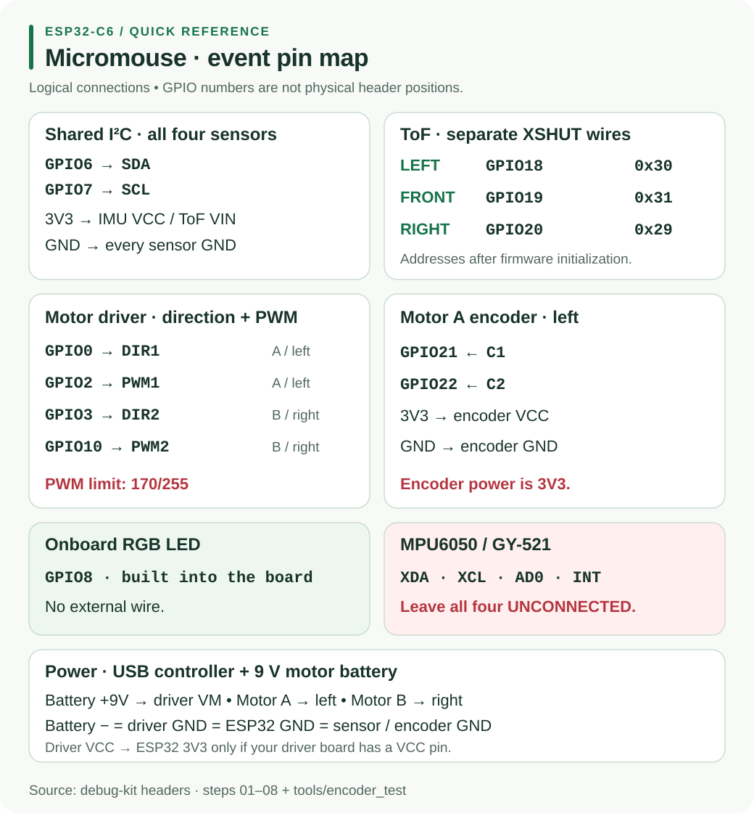

Resource Hub / Hardware / H1
H1 · ControllerESP32-C6 Controller Guide
This wiring follows the top-of-file comments in micromouse-debug-kit. Numbers mean GPIO numbers, not positions along the board header.
Open the debug checks and full sketches →
01Wiring overview

02Exact pin map
| Connection | ESP32-C6 | Notes |
|---|---|---|
| IMU and all ToF SDA | GPIO6 | shared I2C data |
| IMU and all ToF SCL | GPIO7 | shared I2C clock |
| Left ToF XSHUT | GPIO18 | address 0x30 after initialization |
| Front ToF XSHUT | GPIO19 | address 0x31 after initialization |
| Right ToF XSHUT | GPIO20 | address 0x29 |
| Motor A / left DIR1 | GPIO0 | direction |
| Motor A / left PWM1 | GPIO2 | speed |
| Motor B / right DIR2 | GPIO3 | direction |
| Motor B / right PWM2 | GPIO10 | not GPIO5 |
| Motor A encoder C1 | GPIO21 | encoder test |
| Motor A encoder C2 | GPIO22 | encoder test |
| Onboard RGB LED | GPIO8 | already connected; do not reuse |
The kit does not assign a second motor encoder. Avoid adding wiring to GPIO4, GPIO5, GPIO8, GPIO9 and GPIO15: the kit identifies these as C6 strapping pins, with GPIO8 already used by the onboard LED.
03Power and sensor wiring
Power the controller from laptop USB. Connect a separate 9 V motor battery positive to driver VM. Join battery negative, driver GND and ESP32 GND. Motor power goes through the driver.
Connect IMU VCC, ToF VIN and encoder VCC to ESP32 3V3, with their grounds connected to ESP32 GND. Never connect them to the motor battery. Connect driver VCC to 3V3 only if present; tie STBY / EN / SLP HIGH to 3V3 only if the driver exposes such a pin, as described in step 7.
For the MPU-6050 / GY-521, leave XDA, XCL, AD0 and INT all unconnected. Each ToF needs its own XSHUT wire. See the power guide.
04Arduino setup and first result
- Install esp32 by Espressif Systems, version 3.0.0 or newer in Boards Manager. This is the Arduino-ESP32 board package version.
- Select ESP32C6 Dev Module, the USB port, and USB CDC On Boot: Enabled.
- Set Serial Monitor to 115200 baud, No Line Ending.
- Install VL53L0X by Pololu for ToF sketches only.
Adafruit_VL53L0Xdoes not match this code. The IMU needs no additional library. - Upload 01_led_red with only USB connected. Open Serial Monitor and press RESET.
Expected: solid red onboard LED, STEP 1: LED should be RED, then a new alive line every second.
05Bring up the robot in order
Follow the debug index, disconnecting power before changing wires.
| Sketch | Add or test | Expected result |
|---|---|---|
| 02_imu | IMU alone | PASS; heading follows a turn |
| 03_tof_1 | left ToF | 1/1 sensors OK |
| 04_tof_2 | front ToF | 2/2 sensors OK |
| 05_tof_3 | right ToF | 3/3 sensors OK |
| 06_tof_3_imu | combined sensors | all four devices PASS |
| 07_motor_1 | driver, battery, Motor A | forward, stop, reverse, stop |
| 08_motors_2 | Motor B | forward, backward, spin left, spin right |
Only connect the ToF sensors listed in the current step. An extra powered sensor with XSHUT unconnected starts at 0x29 and can disrupt the others. The IMU may stay connected during ToF steps.
Raise the wheels for motor tests. Steps 7 and 8 run at PWM 140, capped at 170/255 with the 9 V battery. Do not raise the cap.
06Troubleshooting
| Symptom | Check or next test |
|---|---|
| No upload port | try a USB data cable and select Tools → Port; if needed hold BOOT, tap RESET, release BOOT and upload |
| Red LED but blank Serial | enable USB CDC On Boot, re-upload, use 115200 baud and press RESET with the monitor open |
| Old LED pattern | confirm the intended sketch uploaded successfully |
| Sensor missing | verify 3V3, GND, SDA6 and SCL7; run i2c_scan |
| Wrong distance column changes | restore left/front/right XSHUT to GPIO18/19/20 |
| Motor LED cycles but wheel stays still | check PWM, DIR, shared GND, battery on VM and any enable pin present |
| Need to verify GPIO0/GPIO2 | unplug the motor first, then run pin_test |
| Motor hums without moving | check battery sag or a jam; use motor_sweep |
If adding a device breaks a passing step, disconnect that addition and repeat the earlier test. Record the sketch name, startup output and actual wiring when asking for help.